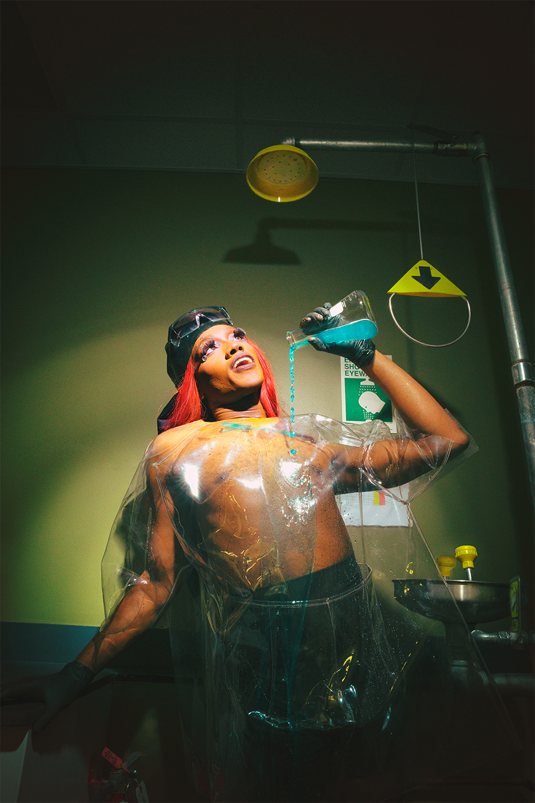
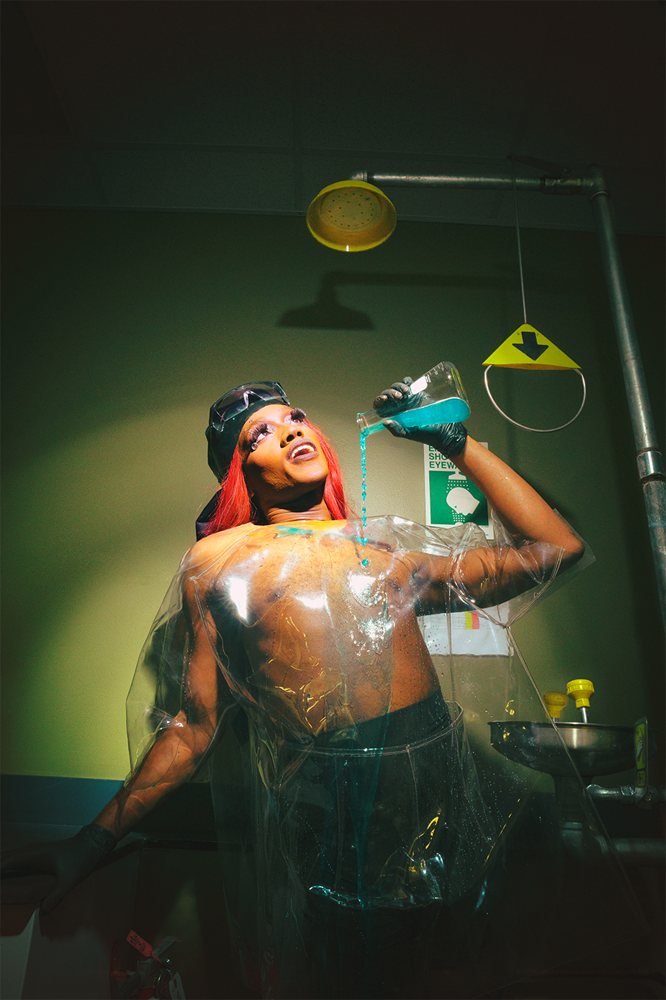

For ______'s sake
In “For ______´s sake” I displayed the child-mother relationship of the four big world-religions, how
theyre explained in the original written word.
I applied an post Internet art aestheitc to create an
iconography which is easier to access for modern generations.
My attempt was to create a mirror to nowaday
religious child education that is far different from how its
explained in the holy scriptures.

When I grow up
The Series "When I grow up" presents the ambivalence between working
as a professional Drag Queen and the desires of their parents.
The photos
show the Drag Queens in the environment of the workplaces their
parents wished them to work in when they were still children.
It
references their fears of not fitting in as well as their personal problems
with their parents while growing up and coming out.
The photo series
highlights the strength of those Queens by opposing the normative labor
market.
They're standing up against those who are still oppressing them,
while being set into the spotlight that they deserve.
 
